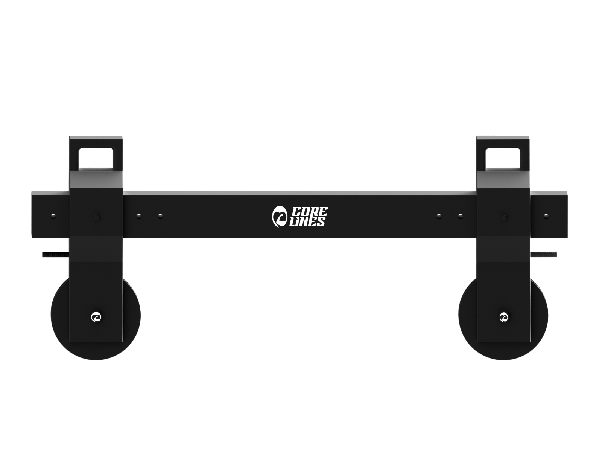
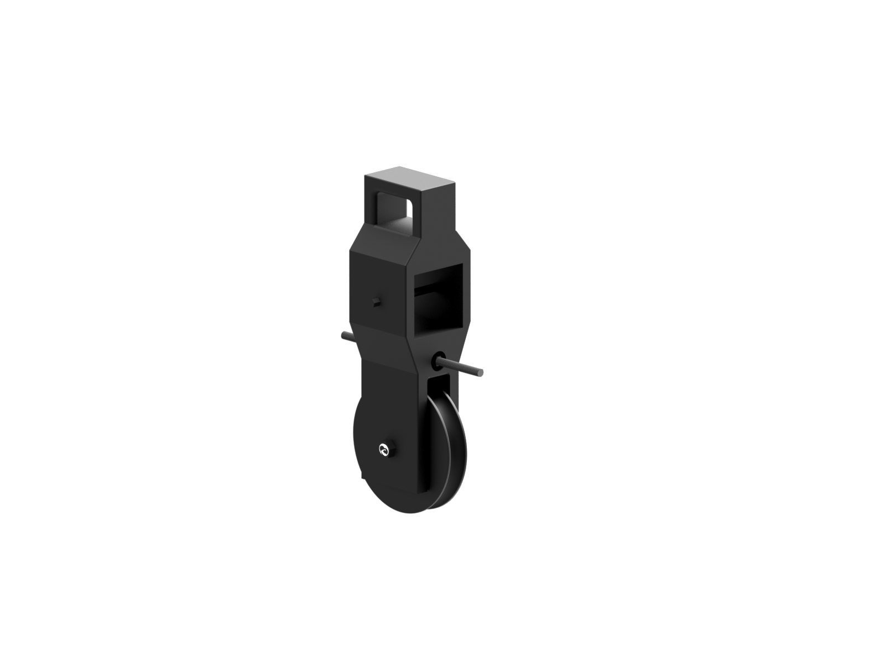

Den mest alsidige model
1499,-
Se produktHome versionen er den mest alsidige model. Den har to ophængspunkter, hvilket er mere skånsomt for skuldermuskulaturen.
Tag den nemt med på rejse
799,-
Se produktFly- versionen er nem og hurtig at sætte op. Kan nemt bruges hjemme ved brug af dørankeret.